Space Digitisation
 Geo-fencing
Spaces
A geo-fence is a virtual perimeter for a real-world geographic area. A geo-fence could be dynamically generated as in a radius around a point location, or a geo-fence can be a predefined set of boundaries. 
Geo-fencing
Spaces
A geo-fence is a virtual perimeter for a real-world geographic area. A geo-fence could be dynamically generated as in a radius around a point location, or a geo-fence can be a predefined set of boundaries.  Adding
Information to a Space
Allocate types to spaces. Attach the information of people and operations to spaces.
Adding
Information to a Space
Allocate types to spaces. Attach the information of people and operations to spaces.
 Geo-locating
Indoor Floor Plans
Geolocate the floor plans of a building
Geo-locating
Indoor Floor Plans
Geolocate the floor plans of a building Customising
the information of a building
indoorinfo
Customising
the information of a building
indoorinfo